Interceptación en Wellington
El escenario describe a dos pasajeros procedentes de Australia, John Fredricksen y Jane Esteban, interceptados en el aeropuerto de Wellington con un kilogramo de metanfetamina oculto en una maleta.
PROJECT PR03 // OPERACIÓN NARCOS: EXPEDIENTE KOWHAI
Análisis de la imagen forense Narcos-1, asociada en el escenario de práctica con el equipo de Steve Kowhai. El examen se orientó a identificar artefactos del sistema, actividad de navegación, documentos e imágenes, herramientas instaladas y referencias geográficas que pudieran ayudar a reconstruir la logística investigada.
ALCANCE: las observaciones se separan de las interpretaciones. La presencia de un archivo, una aplicación o una ruta cartográfica no se considera por sí sola prueba de ejecución, desplazamiento físico, entrega de sustancias o autoría.
El escenario describe a dos pasajeros procedentes de Australia, John Fredricksen y Jane Esteban, interceptados en el aeropuerto de Wellington con un kilogramo de metanfetamina oculto en una maleta.
La investigación menciona la biblioteca de Eastbourne y un inmueble en Petone. En este último se habrían localizado sustancias ilícitas, armas de fuego y una computadora relacionada con Steve Kowhai.
El objetivo del examen fue identificar qué actividades pueden sostenerse a partir del disco: perfiles, registros, navegación, archivos, metadatos y posibles herramientas de ocultación o cifrado.
Los hallazgos se valoraron por su procedencia y alcance. Se evitó equiparar una descarga con una ejecución, una ruta consultada con un viaje o la presencia de una aplicación con autoría de comunicaciones.
Los 15 volúmenes ZIP fueron reconocidos como un archivo ZIP64 dividido; la prueba de integridad de 7-Zip finalizó con “Everything is Ok”. La extracción produjo 21 segmentos de disco y su TXT de adquisición. El paquete también contiene un volcado de memoria de 4 GB, conservado como fuente complementaria y no incorporado a este análisis del disco.
Operating System Information identificó Windows 10 Pro, arquitectura AMD64, nombre de equipo SK-DESKTOP y propietario registrado Steve. El perfil principal observado fue C:\Users\Steve.
En el hive NTUSER.DAT se localizó Software\Microsoft\Windows\CurrentVersion\Explorer\UserAssist, con subclaves identificadas mediante GUID.
Se identificó la base SQLite History de Chrome. Su MD5 es f3f979c6dee9fbb7cbdf5818aaa4b723. También se observó el perfil MicrosoftEdge\User\Default y WebCacheV01.dat; este último formato puede ser compartido con componentes de Internet Explorer y no atribuye por sí solo cada registro a un navegador concreto.
Localizado en C:\Users\Steve\Documents\Misc\airport crystals.jpg. Autopsy mostró creación el 2019-01-30 15:25:18 CST. La interpretación en NZDT debe conservar la zona horaria de origen y documentar la conversión aplicada.
La imagen se ubicó en C:\Users\Steve\Downloads\Misc\BNE.png. Su MD5 observado en File Metadata fue dffa98bdd7371d806adb09db27ba283. La fotografía representa el Story Bridge de Brisbane.
Se localizaron instaladores de Image Steganography 1.5.2 y TrueCrypt 7.1a. TrueCrypt también aparece en Installed Programs, con ejecutables en Program Files\TrueCrypt. La presencia y la instalación no prueban uso efectivo.
Se localizaron artefactos locales asociados con Discord en el perfil de Steve y se examinó la ubicación de la base ActivitiesCache.db utilizada por Windows Timeline. La existencia de datos locales no permite reconstruir conversaciones no recuperadas.
Los hashes y marcas temporales exactos de dropoff.jpg y Method run.jpg, así como el MD5 del instalador de esteganografía, deben incorporarse desde sus fichas File Metadata originales antes de cerrar la tabla de respuestas.
La fotografía de Story Bridge y el nombre BNE coinciden con el código aeroportuario de Brisbane en el itinerario. Los metadatos señalan about:internet, por lo que es una imagen descargada, no una prueba de presencia física.
La captura muestra BNE → WLG el 16/02/2019 y regreso WLG → AKL → BNE el 23/02/2019 para dos adultos. La página muestra una propuesta de reserva; no se aportó confirmación de compra, check-in o abordaje.
La consulta cartográfica situó el punto en 38 Rimu Street, Eastbourne, Lower Hutt, región de Wellington. Su proximidad geográfica con el destino del itinerario es relevante, pero no demuestra una entrega.
airport crystals.jpg y Method run.jpg contienen referencias a Wellington, Eastbourne, Naenae, Stokes Valley y Wainuiomata. La anotación “Home” aparece junto a Eastbourne en Method run; no se identificó quién la agregó ni se probó que las rutas fueran recorridas.
Interpretación: los elementos son compatibles con una planificación geográfica y logística entre Brisbane y Wellington, con referencias locales en Lower Hutt. La evidencia disponible no confirma que el viaje se realizara, que los pasajeros fueran los implicados del escenario ni que se concretara una entrega.
Se observó el directorio local de Discord y artefactos de caché en el perfil de Steve. Esto respalda la presencia de datos asociados con la aplicación; sin mensajes verificables no es posible afirmar qué conversaciones existieron, quiénes participaron o quién escribió un mensaje.
TrueCrypt v7.1a aparece en Installed Programs y se encontraron TrueCrypt.exe y TrueCrypt Format.exe bajo Program Files. No se identificó en los datos revisados un volumen montado o contenedor cuya utilización permita demostrar cifrado efectivo.
Se encontró el instalador Image Steganography 1.5.2 en Downloads y el ejecutable bajo AppData\Roaming\CPascoe\Image Steganography\ProgData. La presencia de los archivos no demuestra que una imagen haya sido usada como portadora de información oculta.
Los registros Run Programs mostraron entradas desde SYSTEM para los instaladores y ejecutables. Estas marcas se interpretan con cautela: ShimCache no proporciona, por sí solo, horas concluyentes de ejecución ni prueba uso efectivo.
Estas son marcas temporales presentadas en resultados asociados con SYSTEM/compatibilidad de aplicaciones. No deben etiquetarse como horas verificadas de ejecución. La cercanía temporal con las imágenes geográficas es una correlación cronológica, no prueba de que se hayan procesado con dichas herramientas.
La combinación de la referencia visual de Brisbane, el itinerario BNE–WLG, la ubicación de Eastbourne y los mapas de rutas locales es compatible con una planificación logística previa a desplazamientos dentro de Wellington y Lower Hutt. La presencia de TrueCrypt e Image Steganography añade interés, aunque no demuestra que se usaran para ocultar información de la operación.
El equipo pudo utilizarse para actividades personales: investigar destinos, consultar mapas, guardar imágenes de ciudades y revisar vuelos para un viaje no relacionado con delitos. Las herramientas de cifrado y esteganografía también pudieron estar presentes por motivos de privacidad o experimentación.
Reservas confirmadas, billetes, pasajeros identificados, check-in, manifiestos de vuelo y registros migratorios.
Mensajes recuperables, identificadores de cuentas, registros de ubicación o dispositivos y evidencia física o videovigilancia vinculada con las fechas y lugares.
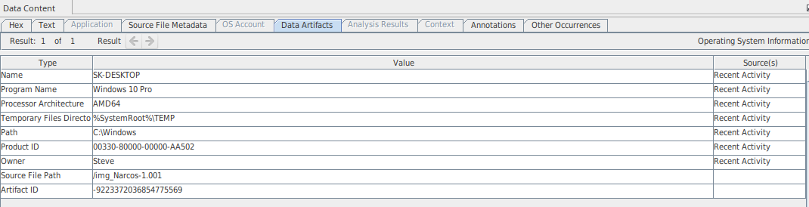
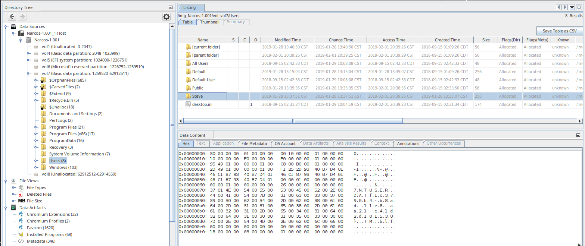
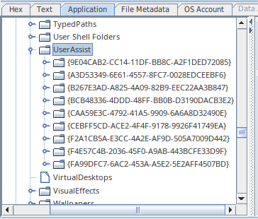
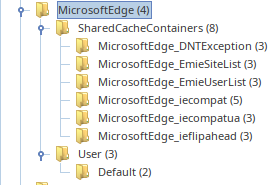
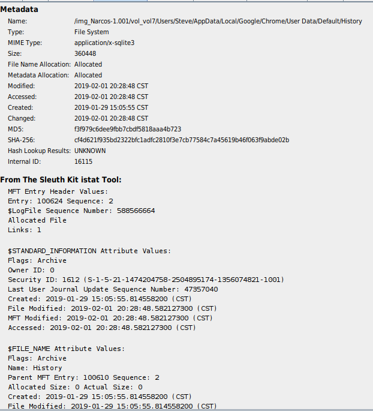
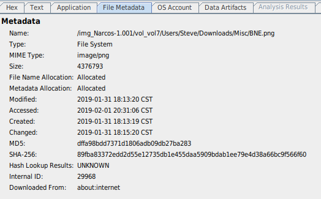
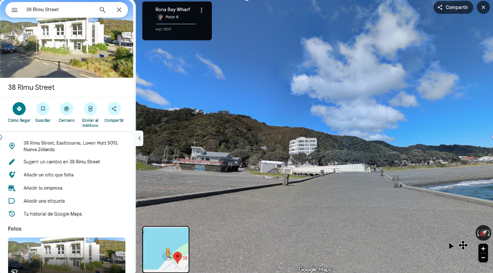
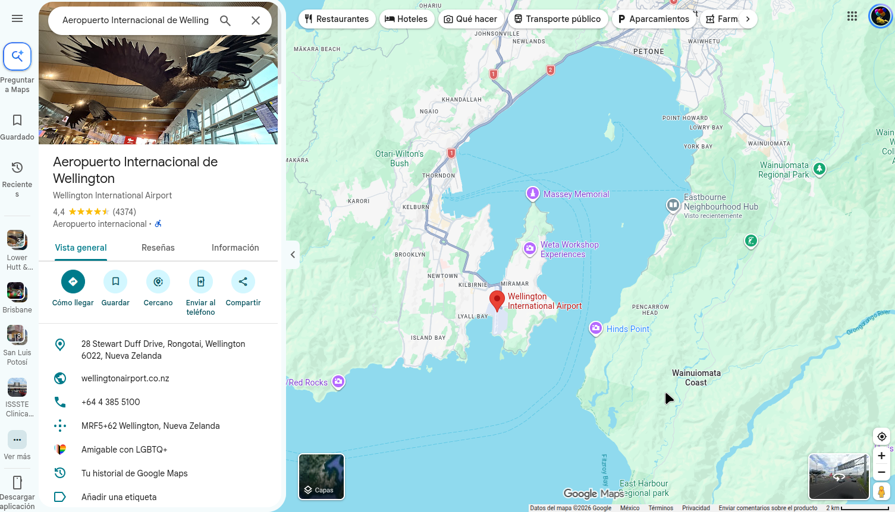
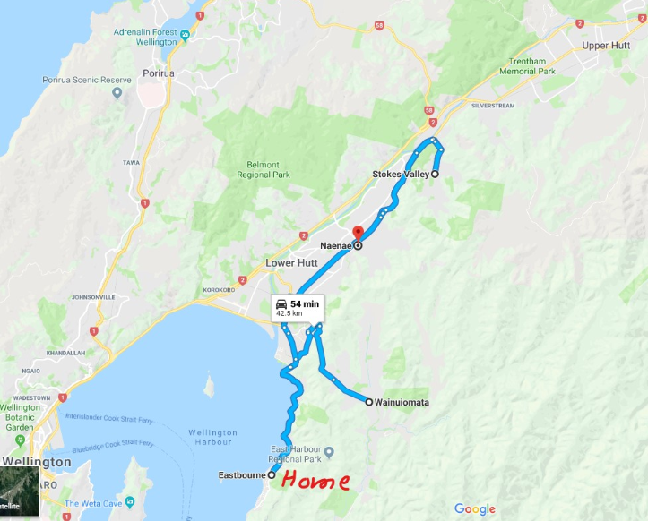
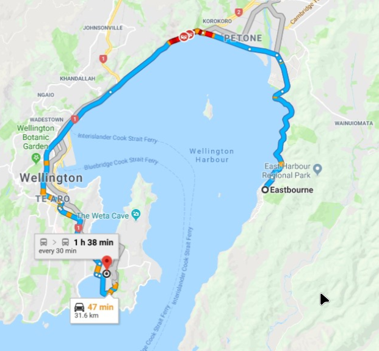
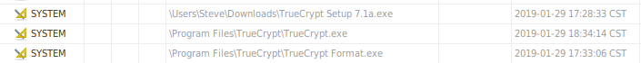
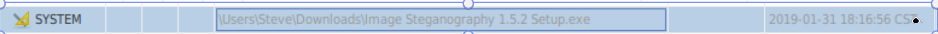
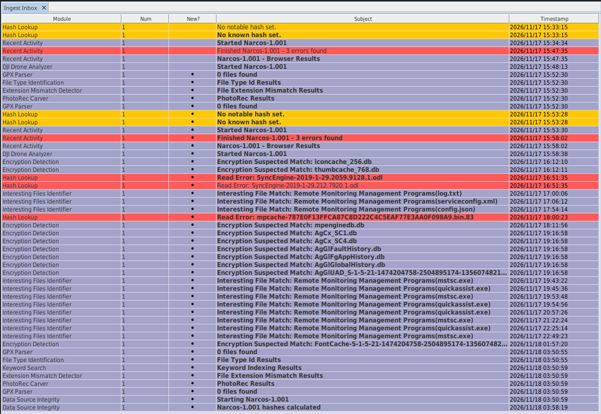
Informe de investigación forense y resultados de Autopsy.
INSERTAR EN: P3/Actividades/EvidenciasPR03/Reporte/PuenteLunaBrunoAxel-PR03.pdfSi el visor no carga, utiliza OPEN // PDF.
Las referencias a Brisbane, el itinerario hacia Wellington, el punto cartográfico de Eastbourne y los mapas de Lower Hutt forman una secuencia geográfica compatible con una posible preparación de desplazamientos. La presencia de herramientas de cifrado y esteganografía amplía las líneas de investigación, pero no demuestra su uso efectivo. La hipótesis requiere corroboración con registros de viaje, comunicaciones recuperables y evidencia física o de ubicación.
El examen se documenta a partir de Narcos-1. Las conclusiones distinguen los datos observados de las inferencias y conservan las limitaciones de los artefactos analizados.